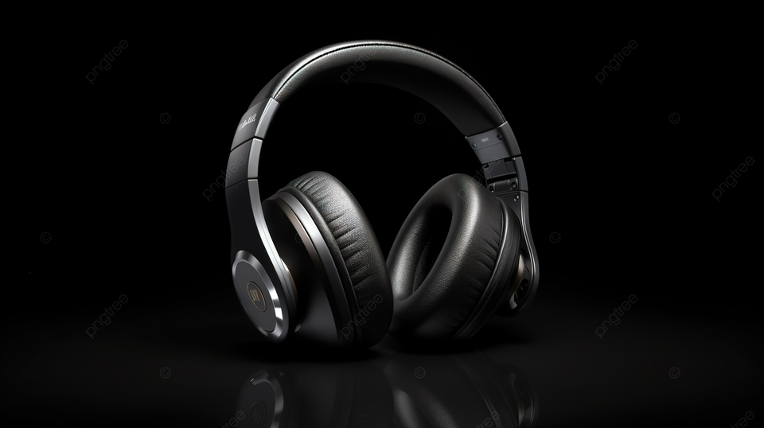
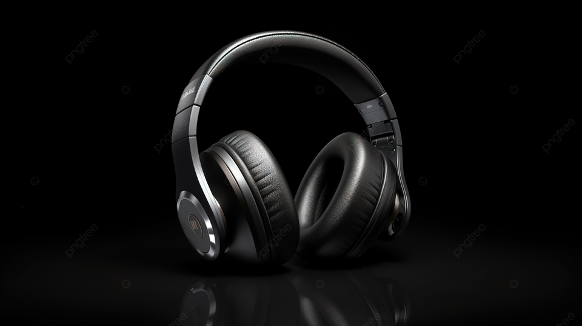

Audifonos Marca Sony
$500.000
Estos audifonos de la marca sony ofrecen una calidad de sony alta definición, cancelación de ruido activa y un diseño ergonómico para una experiencia auditiva excepcional. Son ideales para escuchar música, ver películas o jugar videojuegos, ademas que cuenta con material resistente que soporta caidas y sobre todo, con unas almohadillas comodas para un uso prolongado.
Entre sus componentes cuenta con una bateria de larga duracion, 24 horas de uso continuo, cuenta con aplicacion para añadirle funciones a los botones, tiene un puerto auxiliar para su conexion alambrica y tambien cuenta con conexion alambrica, ademas de un puerto para memoria micro SD, para poder escuchar musica sin necesidad de un dispositivo movil.
 
